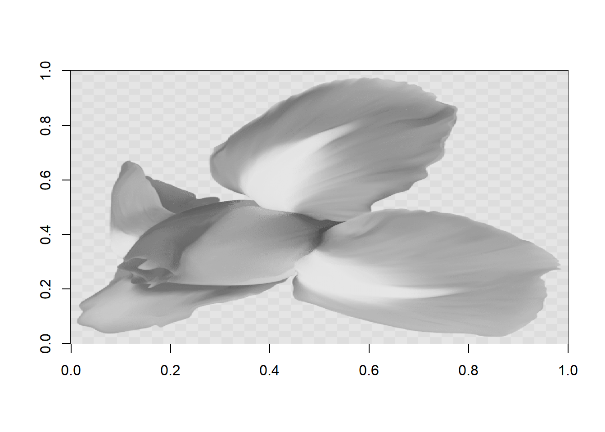

Code
x <- c(1, 2, 3, 4, 5)
x[1] 1 2 3 4 5在学习 R 编程时，很多初学者容易混淆 数据类型（data type） 和 数据结构（data structure）。
实际上，它们解决的是两个不同层次的问题。
简单理解：
数据类型决定“数据是什么”，数据结构决定“数据如何组织”。
例如：
5 是一个 数值型（numeric）"R" 是一个 字符型（character）这些都是 数据类型。
但是在实际分析中，我们往往需要存储 很多数据，例如：
这时就需要 数据结构 来组织数据。
可以用一个简单的类比理解：
| 概念 | 作用 | 类比 |
|---|---|---|
| 数据类型 | 描述单个数据的性质 | 砖头的材料 |
| 数据结构 | 描述数据如何组织在一起 | 房子的结构 |
例如：
因此：
数据类型是基础，数据结构是数据的组织形式。
R 中最重要的五种数据结构包括：
其中：
向量是 R 中最基本的数据结构。
向量的特点：
可以使用 c() 函数创建向量。
x <- c(1, 2, 3, 4, 5)
x[1] 1 2 3 4 5查看向量信息：
typeof(x)[1] "double"length(x)[1] 5向量也可以是其他类型：
y <- c("A", "B", "C")
z <- c(TRUE, FALSE, TRUE)注意：
向量中的元素必须是同一种数据类型。
在 R 语言中，向量化运算（Vectorized Operations） 是一个非常重要的概念。
很多人认为：
向量化运算是 R 语言的灵魂。
这是因为 R 的设计初衷就是 用于统计计算和数据分析，而这些任务通常需要对 一整组数据同时进行计算。
向量化运算指的是：
一次运算同时作用于整个向量，而不是逐个元素计算。
例如：
x <- c(1,2,3,4)
x + 1[1] 2 3 4 5输出结果：
2 3 4 5在这里：
1 自动作用于向量中的每一个元素向量化运算具有三个重要优点：
| 优点 | 解释 |
|---|---|
| 代码更简洁 | 不需要循环 |
| 计算更快 | R 内部使用 C 语言优化 |
| 更符合数学表达 | 表达方式更直观 |
例如：
x <- c(1,2,3,4)
y <- numeric(length(x))
for(i in 1:length(x)){
y[i] <- x[i] + 1
}
y[1] 2 3 4 5使用向量化
x <- c(1,2,3,4)
x + 1[1] 2 3 4 5可以看到：
向量化代码更加简单。
R 可以直接对 两个向量进行运算。
x <- c(1,2,3)
y <- c(4,5,6)
x + y[1] 5 7 9结果：
5 7 9这相当于：
(1+4, 2+5, 3+6)同样可以进行：
x - y[1] -3 -3 -3x * y[1] 4 10 18x / y[1] 0.25 0.40 0.50R 还支持 向量与单个数字运算。
x <- c(10,20,30)
x * 2[1] 20 40 60结果：
20 40 60这里的 2 会自动作用到向量的每个元素。
向量化运算不仅适用于数值，还适用于 逻辑判断。
x <- c(3,7,2,9)
x > 5[1] FALSE TRUE FALSE TRUE结果：
FALSE TRUE FALSE TRUE这在数据筛选中非常重要。
例如：
x[x > 5][1] 7 9结果：
7 9R 中大量函数都是向量化函数，例如：
| 函数 | 作用 |
|---|---|
sum() |
求和 |
mean() |
求平均 |
sqrt() |
开平方 |
log() |
对数 |
abs() |
绝对值 |
示例：
x <- c(1,4,9,16)
sqrt(x)[1] 1 2 3 4输出：
1 2 3 4当两个向量长度不一致时，R 会进行 循环回收（recycling）。
x <- c(1,2,3,4)
y <- c(10,20)
x + y[1] 11 22 13 24R 会自动扩展 y：
10 20 10 20结果：
11 22 13 24如果长度不能整除，R 会给出警告。
在 R 中：
因此可以说：
向量是 R 所有数据结构的基础。
理解向量化运算，就等于理解了 R 语言的计算方式。
假设我们有一组实验数据：
yield <- c(5.2, 6.1, 5.8, 6.5, 5.9)计算平均值：
mean(yield)[1] 5.9计算标准化值：
yield - mean(yield)[1] -0.7 0.2 -0.1 0.6 0.0矩阵是 二维数据结构。
可以理解为：
具有行和列的向量
创建矩阵：
m <- matrix(1:6, nrow = 2, ncol = 3)
m [,1] [,2] [,3]
[1,] 1 3 5
[2,] 2 4 6矩阵结构：
dim(m)[1] 2 3矩阵特点：
访问元素：
m[1,2][1] 3数组是 多维矩阵。
例如：
创建数组：
a <- array(1:12, dim = c(2,3,2))
a, , 1
[,1] [,2] [,3]
[1,] 1 3 5
[2,] 2 4 6
, , 2
[,1] [,2] [,3]
[1,] 7 9 11
[2,] 8 10 12数组特点：
查看维度：
dim(a)[1] 2 3 2列表是一种 非常灵活的数据结构。
列表的特点：
可以包含不同类型的数据。
例如：
my_list <- list(
name = "Alice",
age = 25,
score = c(80, 90, 85)
)
my_list$name
[1] "Alice"
$age
[1] 25
$score
[1] 80 90 85查看结构：
str(my_list)List of 3
$ name : chr "Alice"
$ age : num 25
$ score: num [1:3] 80 90 85列表常用于：
数据框是 R 中最常用的数据结构之一。
可以理解为：
类似 Excel 表格的数据结构
特点：
创建数据框：
df <- data.frame(
id = 1:3,
name = c("A", "B", "C"),
score = c(85, 90, 88)
)
df id name score
1 1 A 85
2 2 B 90
3 3 C 88查看结构：
str(df)'data.frame': 3 obs. of 3 variables:
$ id : int 1 2 3
$ name : chr "A" "B" "C"
$ score: num 85 90 88数据框特点：
可以用下面的关系理解：
| 数据结构 | 维度 | 数据类型要求 |
|---|---|---|
| vector | 一维 | 相同类型 |
| matrix | 二维 | 相同类型 |
| array | 多维 | 相同类型 |
| list | 一维 | 可不同类型 |
| data frame | 二维 | 每列相同，但列之间可不同 |
在 R 中：
常见数据类型包括：
常见数据结构包括：
理解数据类型和数据结构，是学习 R 数据分析的重要基础。
在 R 语言中，对象大体可以分为两类：
理解这两种类型，有助于理解 R 的数据结构。
原子类型是 R 中最基本的数据类型。
它们的特点是：
一个对象中的所有元素必须是同一种类型。
R 中常见的原子类型包括：
| 类型 | 示例 |
|---|---|
| numeric | 3.14 |
| integer | 3L |
| logical | TRUE |
| character | "R" |
| complex | 2+3i |
例如：
x <- c(1,2,3,4)
typeof(x)[1] "double"这里 x 是一个 数值型向量，所有元素类型相同。
列表是一种 更灵活的数据结构。
它的特点是：
列表中的元素可以是不同类型的数据。
例如：
my_list <- list(
name = "Alice",
age = 25,
score = c(90,85,88)
)
str(my_list)List of 3
$ name : chr "Alice"
$ age : num 25
$ score: num [1:3] 90 85 88可以看到：
name 是字符型age 是数值型score 是数值向量| 特征 | 原子类型 | 列表 |
|---|---|---|
| 元素类型 | 必须相同 | 可以不同 |
| 常见形式 | 向量、矩阵、数组 | list |
| 用途 | 数值计算 | 存储复杂对象 |
简单示例：
x <- c(1,2,3)
y <- list(1,"A",TRUE)
typeof(x)[1] "double"typeof(y)[1] "list"结果：
x 是原子向量y 是列表下面练习用于熟悉 R 中的矩阵运算。请完成代码并写出运行结果。
使用 matrix() 函数创建一个 2×3 的矩阵：
1 2 3
4 5 6提示：
matrix()要求：
A创建两个矩阵：
A =
1 2
3 4
B =
5 6
7 8要求：
ABA + B思考：
矩阵加法需要满足什么条件？
给定两个矩阵：
A =
1 2
3 4
B =
5 6
7 8要求：
%*% 计算矩阵乘法 A × B提示：
A %*% B思考：
矩阵乘法与普通乘法有什么不同？
给定矩阵：
A =
1 2 3
4 5 6要求：
A提示：
t(A)给定矩阵：
A =
2 1
3 4要求：
A提示：
det(A)给定矩阵：
A =
4 7
2 6要求：
A提示：
solve(A)思考：
什么情况下矩阵不能求逆？
求解以下方程组：
2x + y = 5
x + 3y = 6步骤：
Absolve() 求解提示：
solve(A, b)一张图片本质上是一个矩阵。
每一个像素，对应矩阵中的一个数值。以鸢尾花为例
library(png)
img <- readPNG("images/iris.png")
dim(img)[1] 859 840 4图片的维度通常为：
plot(1:2, type = "n", xlab = "", ylab = "", axes = FALSE)
rasterImage(img, 1, 1, 2, 2)
p <- img[,,1]
image(p,col = gray.colors(256))
这说明：
矩阵不仅是数学结构，也是图像数据的本质表示方式。